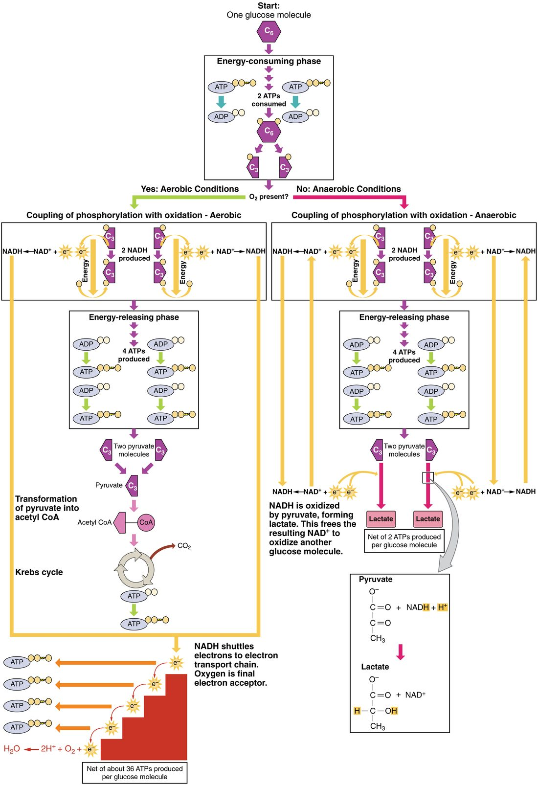

Right now, your body is spending ATP at a rate that would use up its whole supply in a minute or two if nothing rebuilt it. Your cells rebuild it just as fast, mostly by breaking down glucose with oxygen and releasing carbon dioxide and water. This page is a cellular respiration overview: the stages, where each happens in the cell, how much ATP each one makes, what happens when oxygen runs short, and where the carbon dioxide you breathe out comes from. The metabolism chapter returns to every stage in full detail.
The big picture: glucose in, ATP out
Take one glucose molecule in one of your heart cells. Over the next few seconds, enzymes take it apart in a series of small steps. Each step releases a little energy. Some of that energy is captured by rebuilding ATP from ADP and phosphate, and the rest leaves as heat. The six carbon atoms of glucose end up in six molecules of carbon dioxide.
Cellular respiration (re- = again, spir- = breathe) is this controlled breakdown of fuel molecules inside cells, with the energy released captured as ATP. For glucose broken down fully with oxygen, the overall change is:
glucose + 6 O2 → 6 CO2 + 6 H2O + energy (about 30–32 ATP, plus heat)
This is a catabolic process: it breaks a large molecule into small ones. It is also a set of redox reactions. Glucose is oxidized: it loses electrons, mostly as hydrogen atoms, step by step. Oxygen is reduced: at the very end it gains those electrons and becomes water. Burning glucose in a flame gives the same products, but it releases all the energy at once as heat. Your enzymes release it in dozens of small steps, which is why much of it can be captured.
Cellular respiration runs in stages, in two places in the cell (Figure 1):
- Glycolysis, in the cytosol.
- Pyruvate breakdown and the citric acid cycle, in the fluid inside the mitochondrion's inner membrane.
- The electron transport chain, in the inner mitochondrial membrane.
Stage 1 does not use oxygen. Stages 2 and 3 do. All three stages together, run with oxygen, are called aerobic respiration.

Stage 1: glycolysis splits glucose in the cytosol
Glycolysis (glyco- = sugar, -lysis = splitting) is a chain of ten enzyme-catalyzed reactions that splits one six-carbon glucose into two three-carbon molecules of pyruvate. Pyruvate is the form found in your cells of an acid called pyruvic acid (pyr- = fire, uv- = grape: it was first made by heating an acid from grapes).
- Where: the cytosol. No organelle is needed.
- Oxygen: not used.
- ATP: the early steps spend 2 ATP to prepare glucose, and the later steps make 4. The net gain is 2 ATP per glucose.
- Electron carriers: 2 NAD+ are reduced to 2 NADH, carrying off electrons removed from glucose.
Glycolysis is fast but captures only a small share of the energy in glucose. Most of the energy is still locked in the two pyruvates and the two NADH. What happens next depends on whether oxygen is available.
Stage 2: pyruvate is broken down in the mitochondrion
When oxygen is available, pyruvate enters a mitochondrion. Recall that a mitochondrion has a smooth outer membrane and a folded inner membrane, whose folds are the cristae. Stage 2 happens in the fluid enclosed by the inner membrane.
- Pyruvate loses a carbon. An enzyme complex removes one carbon from each pyruvate as CO2, reduces one NAD+ to NADH, and leaves a two-carbon piece called an acetyl group.
- The citric acid cycle takes the acetyl group apart. The citric acid cycle (citr- = lemon; citric acid is the acid of citrus fruit) is a loop of eight enzyme reactions. The acetyl group joins a four-carbon molecule to make citric acid. The loop then removes two carbons as 2 CO2 and ends with the same four-carbon molecule it started with, ready for the next acetyl group.
Per glucose (two pyruvates, so two turns of the cycle), stage 2 gives 6 CO2, 8 NADH, 2 reduced FAD and 2 ATP. The glucose carbon is now fully oxidized to CO2. Almost all the energy that remains has moved into the electrons carried by NADH and reduced FAD. The citric acid cycle is covered step by step in the metabolism chapter, along with its other names.
Stage 3: the electron transport chain makes most of the ATP
The electron transport chain is a series of protein complexes set in the inner mitochondrial membrane. It turns the energy of the carried electrons into ATP in four linked steps (the details return in the metabolism chapter).
- Electrons are handed down the chain. NADH and reduced FAD give their electrons to the first proteins. The electrons pass from protein to protein, each one holding them more tightly than the last, so each hand-off releases a little energy.
- That energy pumps H+. Three of the complexes use it to pump hydrogen ions (H+) out of the inner fluid, across the inner membrane, into the narrow space between the two membranes. An H+ gradient builds across the inner membrane.
- Oxygen takes the electrons at the end. At the last complex, each O2 molecule accepts four electrons and four H+ and becomes two water molecules. This removal keeps the chain moving: without oxygen, electrons back up and the whole chain stops.
- H+ flows back and ATP is made. The inner membrane is nearly impermeable to H+. The ions can flow back down their gradient only through one enzyme complex, which uses that flow to join ADP and phosphate into ATP, much like water turning a mill wheel.
This stage makes about 26–28 ATP per glucose, close to 90% of the total. That is why cells that work hard without a break, such as the cells of your heart wall, are packed with mitochondria.
The oxygen you breathe in has one job here: it is the final electron acceptor. It does not become the CO2 you breathe out. Oxygen atoms from O2 end up in water; the oxygen atoms in CO2 come from glucose and from water used in the citric acid cycle.
Adding up the ATP: why the answer is a range
You can count the ATP made directly and estimate the ATP made from each electron carrier. Follow the tally in Figure 2.
Worked example: ATP from one glucose broken down with oxygen. Current measurements give about 2.5 ATP for each NADH whose electrons enter the chain, and about 1.5 ATP for each reduced FAD.
- ATP made directly: 2 (glycolysis) + 2 (citric acid cycle) = 4 ATP.
- NADH made inside the mitochondrion: 2 (from pyruvate) + 6 (citric acid cycle) = 8 NADH. 8 × 2.5 = 20 ATP.
- Reduced FAD from the citric acid cycle: 2 × 1.5 = 3 ATP.
- NADH from glycolysis: 2. These are in the cytosol, and NADH cannot cross the inner membrane. Shuttle systems pass their electrons in. One shuttle delivers them to NADH inside (2 × 2.5 = 5 ATP). The other delivers them to FAD (2 × 1.5 = 3 ATP).
- Total: 4 + 20 + 3 + 5 = 32 ATP, or 4 + 20 + 3 + 3 = 30 ATP. So about 30–32 ATP per glucose.
The answer is a range, not one fixed number, for three reasons:
- The ratios are not whole numbers. The electrons from one NADH pump about 10 H+, and those from one reduced FAD pump about 6. Making one ATP and moving it out of the mitochondrion uses about 4 H+. So one NADH is worth about 10 ÷ 4 = 2.5 ATP, and one reduced FAD about 6 ÷ 4 = 1.5 ATP.
- The shuttle differs by cell. Heart and liver cells mostly use the shuttle that gives 2.5 ATP per NADH from glycolysis. Some of the muscles that move your limbs rely more on the one that gives 1.5.
- The inner membrane leaks a little. Some H+ slips back across without making ATP, releasing its energy as heat. How much varies with the cell and its conditions, so real yields in a living cell may fall somewhat below 30.
Carbon dioxide: the waste product of metabolism
Every CO2 molecule you breathe out was made in one of your cells, in stage 2. Metabolic CO2 is the carbon dioxide made when cells break down fuel: one CO2 as each pyruvate loses a carbon, and two more in each turn of the citric acid cycle. For one glucose, that is 6 CO2, one for each of its six carbon atoms. Glycolysis and the electron transport chain release none.
CO2 is small and crosses membranes easily. It diffuses down its gradient out of the mitochondrion, out of the cell, into the blood, and is carried to your lungs, where you breathe it out. The faster your cells break down fuel, the more CO2 they make: during exercise, your muscles' CO2 output can rise more than tenfold.
CO2 matters for more than breathing. Dissolved in water, it forms carbonic acid, which releases H+. So when CO2 builds up in the blood, the blood becomes more acidic. The respiratory and acid–base chapters build on this.
Anaerobic metabolism: ATP without oxygen
A mature red blood cell has no mitochondria. It cannot run stages 2 or 3 at all, yet it makes ATP all day, carrying oxygen it never uses. It does this by glycolysis alone, and it turns every pyruvate into lactate.
Anaerobic metabolism (an- = without, aer- = air, bio- = life) is ATP production without the use of oxygen: glycolysis followed by the conversion of pyruvate to lactate. The key is NAD+.
- Glycolysis needs a supply of NAD+ to accept electrons. A cell holds only a small amount.
- Normally, NADH hands its electrons to the electron transport chain, which turns it back into NAD+.
- With no oxygen (or no mitochondria), the chain cannot take the electrons. NADH piles up and NAD+ runs out. Glycolysis would stop within seconds.
- Instead, an enzyme called lactate dehydrogenase passes the electrons from NADH onto pyruvate. Pyruvate is reduced to lactate, and NADH is oxidized back to NAD+.
- With NAD+ restored, glycolysis keeps running and keeps making its 2 ATP per glucose.
So converting pyruvate to lactate makes no ATP itself. It recycles NAD+, and that keeps glycolysis going (Figure 3). Lactic acid (lact- = milk; it was first found in sour milk) is the acid form. At the pH of your body fluids it gives up its H+ almost completely, so what your cells make and release is lactate.

Anaerobic metabolism is not only an emergency route. It runs all the time in red blood cells. It also runs whenever glycolysis produces pyruvate faster than the mitochondria can take it in, as in a sprint, even when oxygen is present. And it is what keeps cells going for a short time when their oxygen supply fails.
Aerobic respiration versus anaerobic metabolism
Aerobic respiration (aer- = air, bio- = life) is the complete breakdown of fuel using oxygen: glycolysis, then pyruvate breakdown and the citric acid cycle, then the electron transport chain. Most people also use "aerobic respiration" for just the oxygen-using stages in the mitochondrion. The table compares the two routes for one glucose.
| Aerobic respiration | Anaerobic metabolism | |
|---|---|---|
| Oxygen needed | Yes, as the final electron acceptor | No |
| Where in the cell | Cytosol, then mitochondrion | Cytosol only |
| What pyruvate becomes | CO2, with its electrons ending up in water | Lactate |
| ATP per glucose | About 30–32 | 2 |
| Speed of ATP production | Slower per second, limited by oxygen delivery and mitochondria | Fast per second, but uses glucose about 15 times faster for the same ATP |
| How NAD+ is regenerated | NADH gives electrons to the electron transport chain | NADH gives electrons to pyruvate, making lactate |
| End products | CO2 and water | Lactate (and H+) |
| Example cell | A heart cell at rest | A mature red blood cell |
Lactate is not a waste product
A common idea is that lactic acid is a toxic waste that poisons tired muscles and causes the soreness you feel a day or two after hard exercise. Neither part holds up.
- Lactate is fuel. It leaves the cells that make it and travels in the blood. Your heart, muscles working at a steady pace, and other organs take it up, turn it back into pyruvate (the same enzyme runs the reaction in reverse) and oxidize it in their mitochondria. Your liver rebuilds glucose from it.
- It clears fast. Blood lactate returns to its resting level within an hour or so after exercise, so it cannot explain soreness that peaks one to two days later. That delayed soreness comes from small injuries inside the muscle and the repair that follows.
When oxygen supply to a cell is cut off
Put the stages together and you can predict what happens to a cell whose oxygen supply stops.
- Oxygen is no longer there to accept electrons at the end of the chain.
- The electron transport chain stops, H+ pumping stops, and mitochondrial ATP production collapses.
- NADH cannot be oxidized, so the citric acid cycle stops too, and CO2 production falls.
- Falling ATP speeds up glycolysis, and pyruvate is converted to lactate. Lactate and H+ build up.
- Glycolysis alone gives only 2 ATP per glucose. It cannot keep up with the cell's demand for long, especially in brain and heart cells, which depend heavily on aerobic respiration.
- Without enough ATP, the sodium–potassium pumps slow, and the cell's ion gradients begin to run down. Within minutes, brain cells start to fail.
The same thing happens when oxygen is present but the chain itself is blocked. Cyanide binds the last complex of the electron transport chain and stops it passing electrons to oxygen. Cells then behave as if they had no oxygen, even though the blood reaching them carries plenty.
Where this returns
This topic is the short version. Each stage returns later in more depth:
- The metabolism chapter works through glycolysis, the citric acid cycle and the electron transport chain step by step, and shows how fats and amino acids feed into the same stages.
- The muscle chapter shows how muscles switch between these routes during exercise, and what fatigues them.
- The respiratory chapter follows the oxygen your cells use and the CO2 they make between your lungs and your tissues.